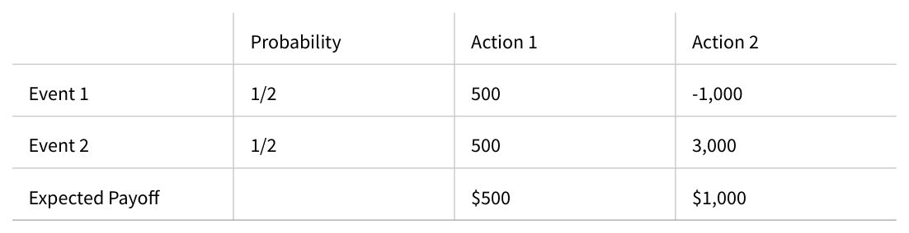
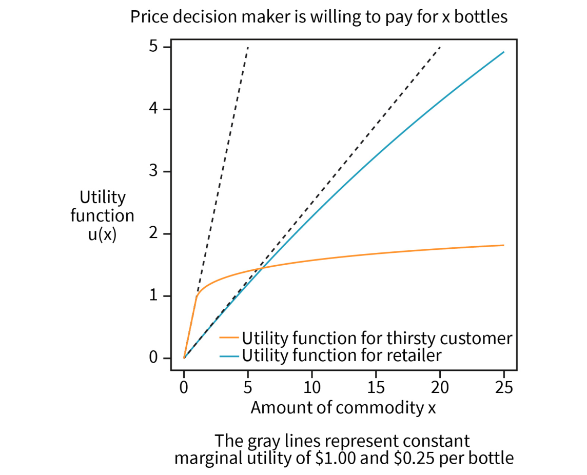
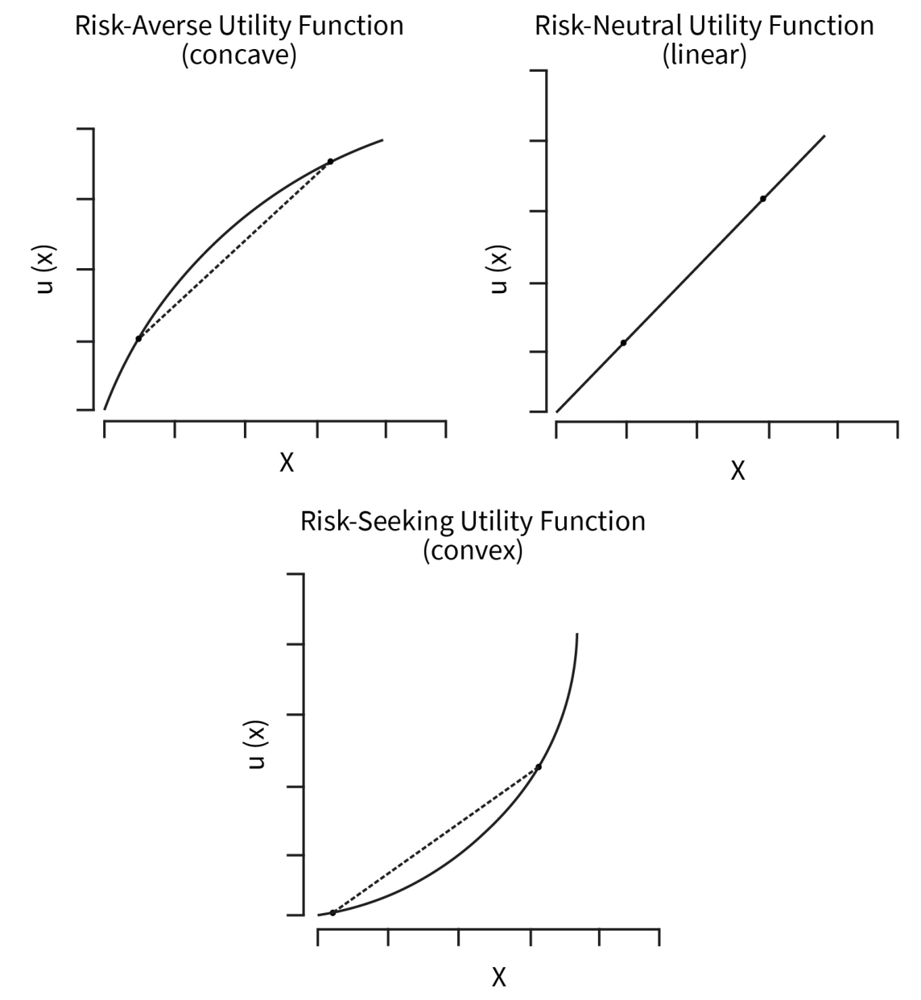
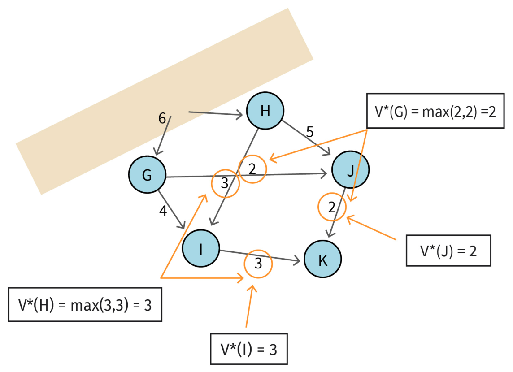

DLMAIRIL01 - Source-derived printable review sheet
Condensed from the same learning note. No additional teaching topics or official examination questions. Formulas and fonts render offline.
Utility incorporates decision-maker valuation and risk attitude; changing the cost-accrual criterion can change the optimal policy even when the underlying routes and transitions remain unchanged.
| Term | Meaning |
|---|---|
| Utility | Value of an amount to a particular decision maker. |
| Marginal utility | Change in utility associated with another unit. |
| Concave | The chord between curve points lies below or on the curve. |
| Convex | The chord lies above or on the curve. |
| Risk-averse / neutral / seeking | Concave / linear / convex utility in the source classification. |
| Minimax distance | The smallest achievable largest route-segment distance. |
Risk-averse: in the source comparison; risk-seeking reverses the inequality.
Stagecoach minimax optimum: longest segment 3 on A-C-F-H-I-K.
The source payoff table gives Action 1 expected payoff 500 and Action 2 expected payoff 1000. Nevertheless, the risk of losing 1000 under Action 2 can make the certain Action 1 preferable to a particular decision maker. This motivates modeling utility rather than equating preference with expected money.
Study these with the detailed explanation in the linked Obsidian note.




Answer before expanding. Open the answers before printing to include them.
Decision makers can have different valuations and tolerances for losses.
Marginal utility of an additional unit.
It falls after the first drink because additional drinks have less value.
Strictly concave, linear and strictly convex respectively.
The utility loss is larger than the corresponding utility gain.
The greatest distance of any single segment along the route.
A-C-F-H-I-K, with a longest segment of three.
Their equal sums can hide different largest segment distances.
Learning note: 02_unit_2_dynamic_programming_and_markov_decision_processes/04_general_utility_functions.
Course book pp. 100-108. Printed page + 2 = PDF viewer page. Personal-study use.